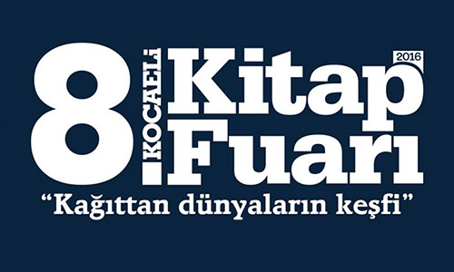
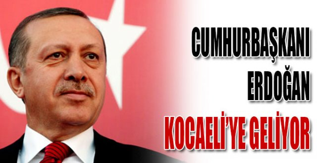
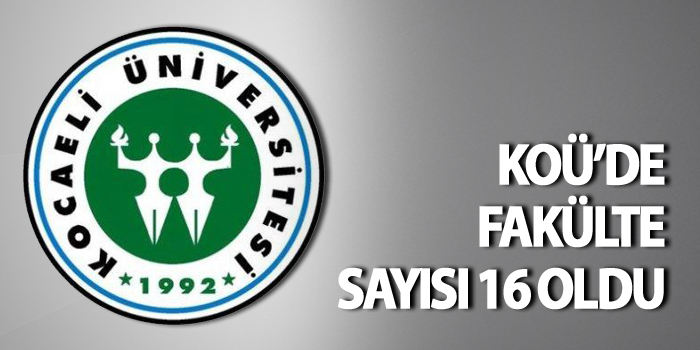
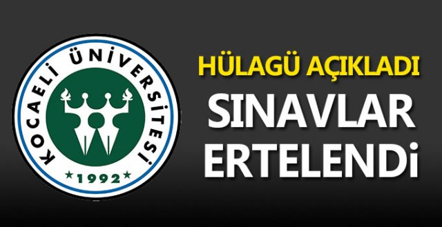

KOCAELİ KİTAP FUARI

Kocaeli Kitap Fuarı ilk günden vatandaşların akınına uğradı.
Kocaeli Kitap Fuarı ilk günden vatandaşların akınına uğradı. Kocaeli Büyükşehir Belediyesinin sekizincisini düzenlediği Kocaeli Kitap Fuarı'nda "Fikir Panosu" büyük ilgi görüyor. Fuaye alanına asılan panoya 7'den 70'e kitapseverler, Kocaeli Kitap Fuarı ile ilgili düşünce ve önerilerini yazıyor.
Panoda, "Her ay kitap fuarı yapısın""Kitaplar tozlanmak için değil, okunmak için alınmalı", "Kitaplarla dolu bir ev istiyorum" gibi sosyal içerikli mesajlar dikkat çekiyor.
Düşünce panosuna, fuarın son günü olan 22 Mayıs Pazar'a kadar herkes düşüncelerini yazabilecek.
CUMHURBAŞKANI ERDOĞAN’A KOCAELİ ÜNİVERSİTESİ’NDE FAHRİ DOKTORA UNVANI VERİLDİ

Kocaeli Üniversitesi’nde Fahri Doktora Tevcih Töreni’ne katılan Cumhurbaşkanı Recep Tayip Erdoğan, “Vatanımızın bütünlüğü, milletimizin birliği ve devletimizin bekası için hayatlarını feda eden her şehidimiz, bizim bu topraklarımızdaki ebedi varlığımızı tescilleyen bir mühürdür" dedi.
Cumhurbaşkanı Recep Tayip Erdoğan, Kocaeli Üniversitesi Umuttepe Kampüsü Prof. Dr. Baki Komsuoğlu Kültür ve Kongre Merkezi’nde düzenlenen Fahri Doktora Tevcih Töreni’ne katıldı. Programa Cumhurbaşkanı Erdoğan ile birlikte, Başbakan Yardımcıları Prof. Dr. Numan Kurtulmuş, Tuğrul Türkeş, Yalçın Akdoğan, Bilim, Sanayi ve Teknoloji Bakanı Fikri Işık, Dış İşleri Bakanı Mevlüt Çavuşoğlu, Ulaştırma, Denizcilik ve Haberleşme Bakanı Binali Yıldırım, Çevre ve Şehircilik Bakanı Fatma Güldemet Sarı, Gençlik ve spor Bakanı Akif Çağatay Kılıç, Gümrük ve Ticaret Bakanı Bülent Tüfenkci, Kocaeli Valisi HASAN Basri Güzeloğlu, Kocaeli Büyükşehir Belediye Başkanı İbrahim Karaosmanoğlu, Kocaeli Üniversitesi Rektörü Prof. Dr. Sadettin Hülagü, milletvekilleri, belediye başkanları ve çok sayıda davetli katıldı.
Programın açılış konuşmasını yapan Kocaeli Üniversitesi Rektörü Prof. Dr. Sadettin Hülagü, Cumhurbaşkanı Recep Tayip Erdoğan’a verilecek olan Fahri Doktora Unvanı hakkında çıkartılan senato kararını okudu. Rektör Hülagü’nün konuşmasının ardından Cumhurbaşkanı Erdoğan’a Fahri Doktora Unvanı takdim edildi.
ÇUKURCA’DAKİ HAİN SALDIRI
Fahri Doktora cübbesini giymesinin ardından kürsüye gelen Cumhurbaşkanı Recep Tayyip Erdoğan, “Sözlerimin hemen başında Hakkari’nin Çukurca ilçesine bağlı Çığlı üs bölgesini hedef alan saldırıda şehit olan 6 askerimiz ile helikopterin düşmesi sonucu şehit olan 2 pilotumuza Allah’tan rahmet diliyorum. Vatanımızın bütünlüğü, milletimizin birliği ve devletimizin bekası için hayatlarını feda eden her şehidimiz, bizim bu topraklarımızdaki ebedi varlığımızı tescilleyen bir mühürdür. Ülkemizde belki şehitler tepesi hiçbir zaman boş kalmayacak ama Allah’ın izniyle hiçbir saldırı, hiçbir bozguncu senaryo amacına ulaşamayacaktır. Malazgirt’ten beri bu toprakları bize vatan kılmak için hayatlarını feda eden tüm şehitlerimizi minnetle yad ediyorum" dedi.
Kendisine verilen fahri doktora unvanı hakkında konuşan Cumhurbaşkanı Erdoğan, "Kocaeli Üniversitesi tarafından şahsıma tebliğ edilen bu anlamlı doktora unvanı için sayın rektöre ve üniversite senatosuna teşekkür ediyorum. İnşallah birkaç hafta sonra 2015-2016 akademik yılını tamamlamış olacağız. Ben bu salondakiler başta olmak üzere üniversite eğitimini başarıyla tamamlayarak mezun olmaya hak kazanan tüm öğrencilerimizi kutluyorum. Sizler ilkokul sıraları ile başlayan uzun ve zorlu bir eğitim sürecini artık geride bırakıyorsunuz. Şüphesiz bazılarınız eğitim basamaklarını çıkmaya devam edecek. Bunun yanında önemli bir kısmınız iş ve meslek hayatına atılarak yeni bir kulvarda yol alacaksınız. Tüm mezunlarımıza bu ülkeye ve millete hayırlı evlatlar olmaları yolunda Allah’tan muvaffakıyetler diliyorum. Sizlerin başarısında emeği ve katkısı olan ailelerinizi ve hocalarınızı tebrik ediyorum. Kocaeli Üniversitesi’nin 24 yıllık geçmişi milletimizin zorluklar ve imkansızlıklar karşısındaki direncinin, mücadele azminin, adeta bir sembolü gibidir. Kocaeli Üniversitesi kuruluşundan sadece 7 yıl sonra çok büyük bir felakete maruz kaldı. 1999 Marmara depreminde maddi varlığının yüzde 75’lik bir kısmını kaybetti. Buna rağmen üniversitemiz kendini toparladı ve 1999-2000 akademik yılına 1 ay gecikme ile başladı. Bu felaketin ardından sadece 4 yıl içerisinde üniversitemiz modern bir kampüs ile eğitimini sürdürmeye devam etti. İnşallah 3 milyon metrekare alanda kurulacak bilişim vadisi ile Kocaeli sadece sanayinin değil teknolojinin de merkezi olacak. Bu merkezin altyapı çalışmaları tamamlandı. İnşallah 55 bin metrekarelik üst yapı inşaatı da tamamlanacak ve tesis yıl sonuna kadar hizmete girecek. Başarı elinizdeki imkanların büyüklüğü ile ölçülebilecek bir şey değildir. Hayatın her alanında başarının anahtarı sıkıntılar, zorluklar, yokluklar karşısında yılmadan hedefleriniz doğrultusunda yürümeyi göze almaktır. Bahanelere sarılarak, mazeret üreterek başarı yakalanamaz. Bu kolay olanıdır. Asıl mesele ümitsizliğe kapılmadan sorumlulukları en iyi şekilde yapmak ve zoru kolay kılabilecek bir iradeye sahip olmaktır. Tüm öğrencilerimizin bu bilinçle hayata yaklaşacaklarına da inanıyorum" diye konuştu.
"Ülkemizin son 14 yılı, bu anlattıklarımın adeta bir özeti, bir izdüşümü gibidir" ifadesini kullanan Cumhurbaşkanı Recep Tayyip Erdoğan, "Türkiye 14 yılda hangi başarılara imza attıysa, hangi projesini hayata geçirdiyse, emin olun önüne çıkan bir çok engeli aşarak yapmıştır. Ülke sorumluluğunu omuzladığımız ilk günden itibaren biz şu gerçeğin farkındaydık; Yükümüz ağır işimiz çok. Vesayet odaklarının boş durmayacaklarının, demokrasinin yerleşmesi, milli iradenin hakim kılınması için yapılanları sabote edeceklerinin farkındaydık. Aynı şekilde Türkiye’nin güçlenmesinin, iddia sahibi olmasının uluslararası güç odaklarını rahatsız edeceğini de biliyorduk. İradesini başka ülkelere teslim edenler, 79 milyonluk Türkiye gemisini batırmaktan bir an olsun çekinmezler. Bunu 14 yıllık Başbakanlık, Cumhurbaşkanlığı dönemimde de yaşayarak gördüm" şeklinde konuştu.
KOÜ’DE FAKÜLTE SAYISI 16 OLDU

Kocaeli Üniversitesi Denizcilik Fakültesi ile Uygulamalı Bilimler Fakültesi’nin kurulma kararının Resmi Gazete’de yayınlanması ile birlikte Kocaeli Üniversitesi’nde fakülte sayısı 16’ya yükseldi.
İŞTE O KARARLAR
Kocaeli Üniversitesi Barbaros Denizcilik Yüksekokulu’nun kapatılması ve Denizcilik Fakültesi’nin kurulması yönünde Resmi Gazete'de yayınlanan 2016/8555 sayılı kararda şu ifadelere yer verildi: Kocaeli Üniversitesi Barbaros Denizcilik Yüksekokulu’nun kapatılması ve Denizcilik Fakültesi’nin kurulması; Millî Eğitim Bakanlığının teklifleri üzerine, 28/3/1983 tarihli ve 2809 sayılı Kanunun ek 30’uncu maddesine göre, Bakanlar Kurulu'nca 16/2/2016 tarihinde kararlaştırılmıştır."
Kocaeli Üniversitesi Uygulamalı Bilimler Fakültesi’nin kurulması yönünde Resmi Gazete'de yayınlanan 2016/8562 sayılı kararda ise şu ifadelere yer verildi: Kocaeli Üniversitesi Uygulamalı Bilimler Fakültesi’nin kurulması; Millî Eğitim Bakanlığının 22/12/2015 tarihli ve 13210223 sayılı yazısı üzerine, 28/3/1983 tarihli ve 2809 sayılı Kanunun ek 30’uncu maddesine göre, Bakanlar Kurulu'nca 25/1/2016 tarihinde kararlaştırılmıştır."
KOCAELİ ÜNİVERSİTESİ'NDE SINAVLAR ERTELENDİ

Kocaeli Üniversitesi'nde yoğun kar yağışı nedeniyle yarınki bütünleme sınavları ertelendi. Açıklamayı Kocaeli Üniversitesi Rektörü Prof. Dr. Sadettin Hülagü Twitter hesabından yaptı.
İşte Kocaeli Üniversitesi Rektörü Prof. Dr. Sadettin Hülagü'nün Twitter hesabından yaptığı o açıklama:
Yoğun kar yağışı nedeniyle Üniversitemizde 25 ocak 2016 pazartesi günü eğitim ve öğretime bir gün ara verilmiştir. Yarın yapılacak BÜT sınavları ileri bir tarihe ertelenmiştir.Hamile ve engelli personel yarın idari izinli sayılacaktır."
DOKTOR ADAYLARINDAN İLK YARDIM DERSİ

KOÜ Tıp Fakültesi 1. sınıf öğrencileri, KO-MEK kursiyerlerine ilk yardım eğitimi verdi. Eğitimlere katılan kursiyerler, sağlık alanında yeni bilgiler edinme şansı yakaladı
Geleceğin doktorlarını yetiştiren Kocaeli Üniversitesi (KOÜ) Tıp Fakültesi, öğrencilerini sadece tıbbi konularda değil sosyal sorumluluk projelerinde de eğiterek geleceğe hazırlıyor. İlk yardım konusunda farkındalık yaratmak için toplumsal sorumluluk projesi hazırlayan KOÜ Tıp Fakültesi 1. Sınıf öğrencileri, Kocaeli Büyükşehir Belediyesi Meslek ve Sanat Eğitimi Kursları(KO-MEK) kursiyerlerine ilk yardım konusunda eğitim verdi.
DİKKATLE DİNLEDİLER
İlk yardım konusunda en kısa sürede yapılması gereken doğrular ve yapılmaması gereken yanlışları KO-MEK kursiyerlerine anlatan geleceğin doktorları, kursiyerler tarafından dikkatlice dinlendi. KO-MEK Leyla Atakan Kurs Merkezi Çok Amaçlı Toplantı Salonu’nda gerçekleştirilen ilk yardım seminerinde öğrencilerden Elif Sönmez kalp masajı ve yapay solunum, Didar Kırıcı solunum tıkanmasında ilk yardım, Aslı Ayşegül Aslantaş kanamalar ve burkulmalar, Rüveyda Eraslan yanıklar ve göze yabancı cisim kaçması konusunda bilgi verdi.
KALP MASAJI ANLATILDI
Ayrıca; Selin Uyar ateş, havale ve sıcak çarpması, Deniz Özhan Ay kan şekeri düşüklüğü, Ayşen Yüksel ishal hastalıklarında yapılması gerekenler, Rümeysa Hilal Gürsel arı sokması ve kedi-köpek ısırması, Nadir Hasanzade de temel yaşam desteği uygulama konularında ilk yardım dersi verdi. Enise Taşır, Erkut Talay, Abdullah Tunç, Muhammet Mustafa Kılıç, Ayşenur Tak, Muhammed Abuzeyda ise teknik ekipte yer alan öğrenciler oldu. Hastaya kalp masajı ve suni teneffüsün nasıl yapılması gerektiğini görsel bir şekilde kursiyerlere aktaran öğrenciler kalp masajının doğru bölgeye ve doğru sayıda yapılması gerektiğini ifade etti.
FARKINDALIK İÇİN
Çocuklarda ilk yardımın önemine dikkat çeken Didar Kırıcı, çocuklarda tıkanma sonucunda dikkatli bir şekilde el üzerine alınarak sırt ve göğüs kafesi ortasına orantılı şekilde 5’er defa ayrı ayrı vurulması gerektiğini belirtti. KOÜ Tıp Fakültesi’nde öğretim görevlisi ve aynı zamanda öğrencilerden sorumlu olarak projeye katılan Prof. Dr. Fethiye Kolaylı ise açıklamasında, “Her yıl tıp fakültesi 1. sınıf öğrencilerine gruplar oluşturarak her birine toplumsal duyarlılık projesi veriyoruz. Benim grubum ilk yardım konusunda farkındalık oluşturmak için bir çalışma gerçekleştiriyor” dedi.
|